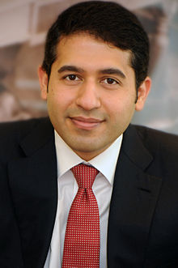

In 2001, Vandrevala co-founded Intrepid Capital Partners with Pete Musser. He
is Vice Chairman. The company is based in Wayne, Pennsylvania.
Together with his wife Priya, Vandrevala created the Vandrevala Foundation which
supports people who suffer from mental illness.
They have worked closely with Mark Shand's Elephant Family charity. In 2010,
they were the principal contributors to The Elephant Parade. In 2015, they
sponsored a vehicle in the Travels To My Elephant rickshaw race.
In 2011, the Vandrevalas were named in The Evening Standard list of London's top
philanthropists.
Global Investor of the Year - 2015 Asian Business Awards
Vandrevala is married to Priya Hirandani and they have two children together. In
2008, Vandrevala was in the news for buying a £20 million home in Holland Park.
On 21 November 2013, the Vandrevalas funded a 400-person birthday event for
Prince Charles at Buckingham Palace.